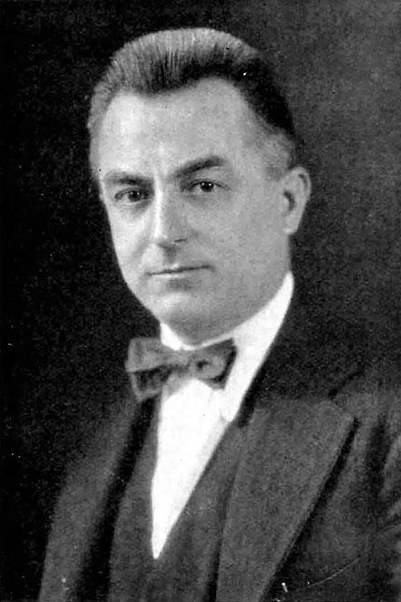

레이몬드 후드
레이몬드 후드(1881년 3월 29일 1934년 8월 14일)는 네오 고딕 양식 과 아르데코 양식을 담당한 미국의 건축가였습니다.
그는 Tribune Tower , American Radiator Building 및 Rockefeller Center 의 설계로 가장 잘 알려져 있습니다.
짧지만 매우 성공적인 경력을 통해 Hood는 20세기 건축에 큰 영향을 미쳤습니다.

레이몬드 후드의 일생
- 1.1911년 후드는 미국으로 돌아와 피츠버그 에 있는 헨리 혼보스텔 의 사무실에 취직했습니다 .
- 2.Hood는 자신을 예술가라고 생각하지 않았지만 자신을 "제조 쉼터"로 여겼습니다.
- 3.후드의 디자인 이론은 실용성을 아름다움으로 평가한다는 점 에서 바우하우스 의 디자인 이론과 일치했습니다 .
- 4.후드는 관절염으로 인해 53세에 사망했으며 [16] 뉴욕주 슬리피 할로우 에 있는 슬리피 할로우 묘지 에 묻혔습니다 .